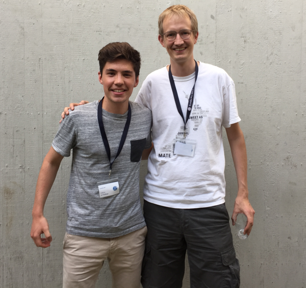
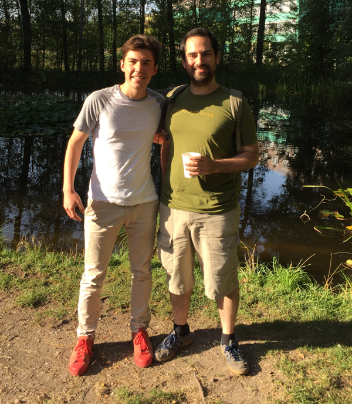
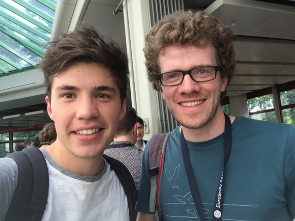
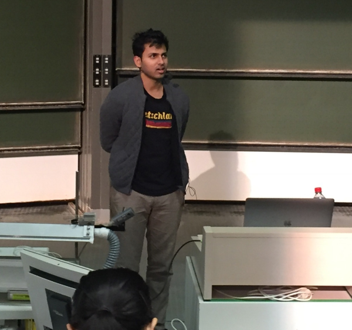

The EuroScipy 2017 took place in Erlangen, Germany. It was fist developer conference ever that I attended. In the following I want to briefly describe my expierence, followed by some fan pics and a few take aways at the end.
The program to the conference can be found here.
Every talk was recorded and uploaded on Youtube.
On the first two days there were only tutorials. They had a beginner track and an advanced track. I switched back and forth between the two (see program link).
Julia Rohrer gave the keynote “How to Fix a Scientific Culture: Psychology as a Cautionary Tale and Paragon” of the conference. I didn’t expect the scientific culture to bad that bad. She talked about p-hacking (= use of creative methods to make the outcome of your experiment statistical significant) and how the current system of grant distribution causes bad behavior among scientist.
Tim Head (@betatim) is a core contributor to scikit-optimize.
He gave a very informative talk about Bayesian Optimization. As Tim also enjoys running, we went for a run together in the morning of the second day. 
Olivier Grisel (@ogrisel) is contributor to scikit-learn.
Olivier is a really funny guy and thus quite approachable. He publishes most of his tutorials on github which are very helpful. 
Joris Van den Bossche (github) is a core contributor to pandas.
He sat down with me for a couple of minutes to give me some tips ron how to solve an optimization problem for a site project. 
Soumith Chintala (@soumithchintala is a core contributor to PyTorch.

My high expectations were satisfied. I didn’t know anybody when I arrived and left with some new friends. The conference helped me to get a much better understanding of the scientific programming ecosystem in Python. The conference also helped me to get an idea whether I would enjoy working as a software developer or not.
As always, I would love to hear your feedback!
Shoot me an email: info(at)janruettinger.com